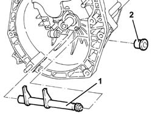
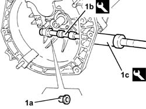
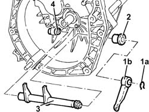

1820A26 thrust bearing linkage - r + r with gearbox removed
- Path
- Procedures > 18 CLUTCH > 1820 CLUTCH RELEASE CONTROLS > 1820A clutch release mechanical control > 1820A26 thrust bearing linkage - r + r with gearbox removed
- Kind
- repair procedure (removal / refitting; the operation number is the code)
- Applies to
- engines: 2.5 V6, 3.2 V6, 1.9 JTD 8v , 1.9 JTD 16v, 2.4 JTD 10v; all production periods
- Interactive page
- https://sloeber94.github.io/elrnDB-a156/en/#/3237909
Applies to: engines: 2.5 V6, 3.2 V6, 1.9 JTD 8v , 2.4 JTD 10v; all production periods
 Removing
Removing
 Refitting
Refitting1. Remove the clutch release linkage.
2. Remove the outer non-slip bush.

Applies to: engines: 2.5 V6, 3.2 V6, 1.9 JTD 8v , 2.4 JTD 10v; all production periods
1. Remove the inner non-slip bush (1a) using the tools (1b) and 1c).
 | Name | Country |
|---|---|---|
1b | Extractor | 1.821.253.000 |
| Name | Country |
|---|---|---|
1c | Counter weight | 1.840.206.001 |

Applies to: engines: 2.5 V6, 3.2 V6, 1.9 JTD 8v , 2.4 JTD 10v; all production periods
Refitting
RemovingFit the inner non slip bush with a suitable fitting tool.
Fit the clutch release linkage.
Fit the outer non-slip bush.
Applies to: engines: 1.9 JTD 16v; all production periods
Removing
Refitting1. Remove the circlip (1a) and the lever (1b).
2. Remove the outer non-slip bush.
3. Remove the clutch release linkage.
4. Remove the inner non-slip bush.

Applies to: engines: 1.9 JTD 16v; all production periods
Refitting
RemovingPlace the inner non-slip bush back in its housing.
Place the thrust bearing control linkage back in its housing.
Place the outer non-slip bush back in its housing.
Place the lever back in its housing and secure it using the circlip.